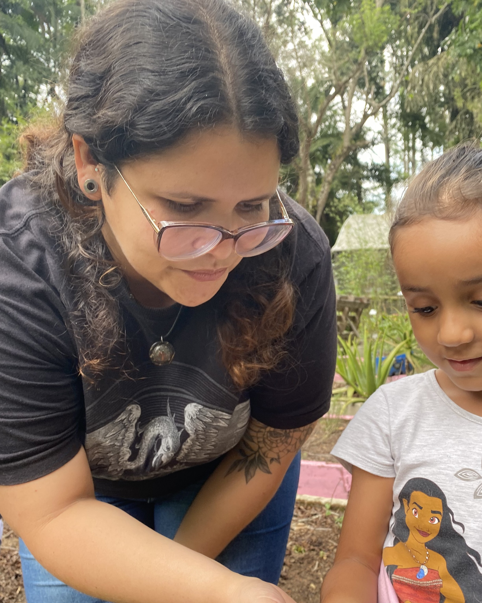

GIULLIAN CASTRO

CONTATO
- E-mail: giullian.andres@fatec.gov.br
- Telefone: (12) 99999-0000
FORMAÇÃO
Geoprocessamento - FATEC Jacareí (2022 - atual)
Engenharia Ambiental e Sanitária - Faculdade Única (2020 - atual)
Ciências Biológicas - PUC Campinas (2008-2011)
Especialização em Arborização Urbana - Unifesp (2021-2022)
Especialização em Ensino de Biologia - UEL (2017-2019)
Especialização em Neuroaprendizagem - Unopar (2015-2016)
SOBRE MIM
Olá, meu nome é Giullian Castro, tenho 34 anos.
Sou formada em Ciências Biológicas pela PUC Campinas e Especialista em Arborização Urbana pela Unifesp.
Estou em busca de novas oportunidades de trabalho na área de gestão e licenciamento ambiental.
EXPERIÊNCIA
- Bióloga - Prefeitura de Jacareí (2019-2024)
- Professora de Biologia e Ciências - Colégio Rezende Rezende (2013 - 2019)
- Professora de Biologia - Colégio Nova Geração (2013-2019)
- Auxiliar de Viveiro de Mudas de Árvores Nativas - ONG Jaguatibaia (2012-2012)
HABILIDADES
- Boa Comunicação
- Liderança
- Autodidata
INTERESSES
Licenciamento Ambiental; Restauração e Reflorestamento; Gestão Ambiental e ISO 14001
REDES SOCIAIS
 LinkedIn: giullian-castro
LinkedIn: giullian-castro Instagram: @biolo.giu
Instagram: @biolo.giu